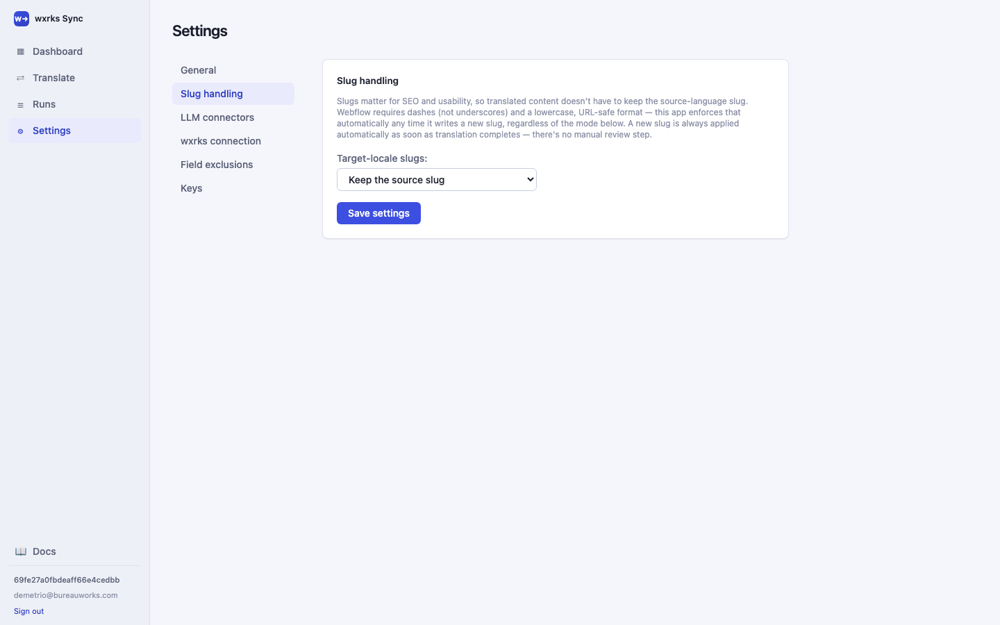
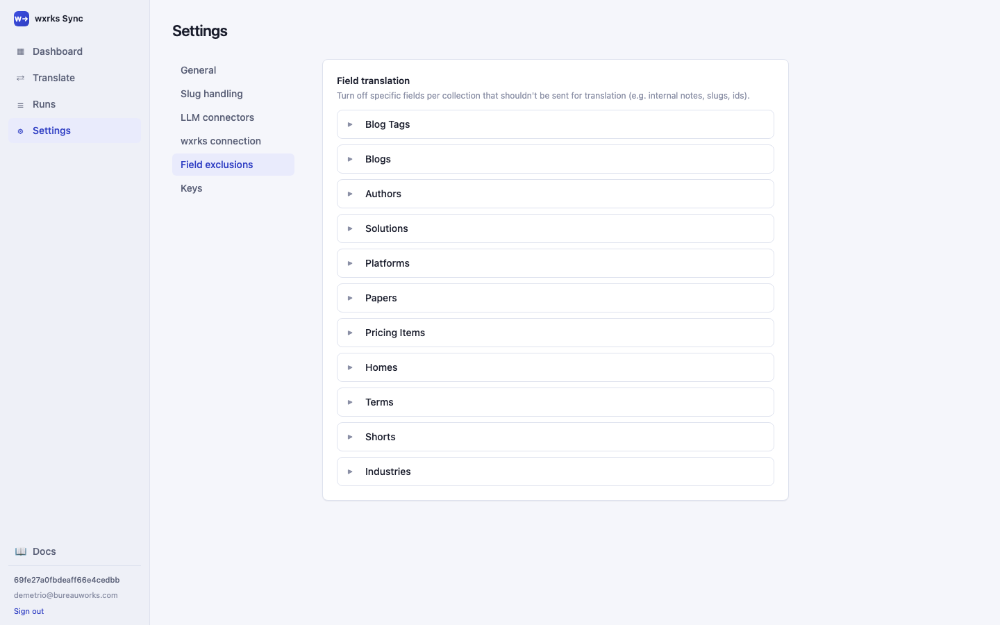

03 · Content & Field Rules
Slug handling & field exclusions
Two settings tabs decide exactly what gets translated, and how translated URLs are built: Slug handling and Field exclusions.
Slug handling

Every translated CMS item, page, or component keeps its own slug in each target locale. This setting controls what that translated slug looks like:
| Mode | What happens |
|---|---|
| Keep the source slug | The translated item reuses the exact same slug as the source language. |
| Translate | The slug is translated into the target language's words, then slugified. |
| Transliterate | The source slug's characters are converted into the target language's script (e.g. Cyrillic → Latin) rather than translated word-for-word — built in for Cyrillic and Greek, with the LLM connector as a fallback for scripts it doesn't cover. |
Webflow requires slugs to be dashes (not underscores), lowercase, and URL-safe — this app enforces that automatically no matter which mode is selected.
Field exclusions

By default, this app auto-selects every text-type field across every collection as translatable (that's the "Automatic field adjustment" step on the Dashboard). Expand any collection here to turn off specific fields that shouldn't be sent for translation — typical candidates are internal notes, IDs, or any field already handled by Slug handling above.